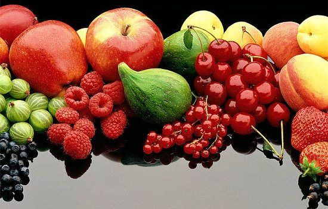

مقدمه
کروناویروسها (نام علمی: Coronaviruses) خانواده بزرگی از ویروسها و زیر مجموعهٔ کروناویریده هستند که از ویروس سرماخوردگی معمولی تا عامل بیماریهای شدیدتری همچون سارس، مرس و کووید ۱۹ را شامل میشود. کروناویروسها در دههٔ ۱۹۶۰ کشف شدند و مطالعه بر روی آنها بهطور مداوم تا اواسط دهه ۱۹۸۰ ادامه داشت. این ویروس بهطور طبیعی در پستانداران و پرندگان شیوع پیدا میکند، با این حال تاکنون هفت کروناویروس منتقل شده به انسان، کشف شدهاست. آخرین نوع آنها، کروناویروس سندرم حاد تنفسی ۲ (SARS-CoV-2)، در دسامبر ۲۰۱۹ در شهر ووهان چین با همهگیری در انسان شیوع پیدا کرد. کرونا ویروس پس از مدت کوتاهی تمام جهان را درگیر کرد.
تخمین زده میشود که نزدیکترین نیای مشترک (MRCA) تمامی کروناویروسها تا ۸۰۰۰ سال قبل از میلاد وجود داشتهاست، اگرچه برخی از مدلها تا ۵۵ میلیون سال یا بیشتر را نیز ذکر میکنند که این نشان از همبستگی طولانی مدت با خفاشها دارد. نخستین کروناویروسهای کشف شده مورد مربوط به ویروس برونشیت عفونی مرغی بودهاست. سپس دونوع انسانی ۲۲۹ئی (HCoV-229E) و اوسی۴۳ (HCoV-OC43) که منجر به سرماخوردگی در انسان میشود نیز کشف شده.
| آخرین مقالات
|
||
|---|---|---|
|  |

|
|
| پر خطر ترین افراد در معرض کرونا چه کسانی هستند؟ | کدام میوه های تابستانی به ما در شرایط همه گیری ویروس کرونا کمک می کند؟ | راه های پیشگیری از کرونا |